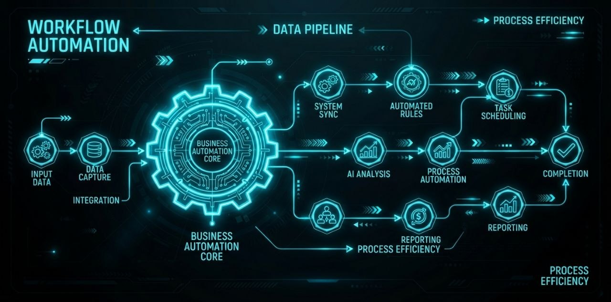

N8N для автоматизации бизнеса: полный гайд 2026

n8n — это мощный open-source конструктор автоматизации, который позволяет соединять любые сервисы без единой строчки кода. В отличие от Zapier или Make, n8n полностью бесплатен для самостоятельного использования и даёт полный контроль над данными.
🔥 Готовые шаблоны n8n — 9 580 workflow в нашем каталоге. Открой бота и начни автоматизацию за 1 минуту.
Перейти в каталог →Что такое n8n и зачем он бизнесу?
Представьте, что у вас есть виртуальный сотрудник, который:
- Автоматически отвечает на входящие email с помощью AI
- Отправляет уведомления в Telegram при новых заказах
- Собирает данные из CRM и формирует отчёты в Google Sheets
- Генерирует картинки по расписанию и публикует в соцсетях
- Обрабатывает брошенные корзины и восстанавливает продажи
Всё это — один n8n workflow. На платформе доступно уже 9 580 готовых шаблонов, которые можно импортировать за секунду.
Как установить n8n?
Самый простой способ — через Docker. Базовая установка занимает 5 минут:
Шаг 1: Установите Docker на сервер (VPS или облако)
Шаг 2: Запустите контейнер n8n:
docker run -it --rm --name n8n -p 5678:5678 -v ~/.n8n:/home/node/.n8n n8nio/n8n
Шаг 3: Откройте http://ваш-сервер:5678 и создайте аккаунт
Шаг 4: Начните импортировать шаблоны!
Если нет своего сервера — можно использовать n8n Cloud (платный, но не требует настройки).
Топ-5 сценариев автоматизации с n8n
1. AI Email Support
Подключите Gmail → ChatGPT → Slack/Telegram. AI анализирует каждое входящее письмо: на типовые вопросы отвечает автоматически, сложные запросы передаёт оператору с полным контекстом. Экономит до 80% времени поддержки.
2. Telegram AI Assistant
Telegram бот → ChatGPT → CRM. Клиент пишет в Telegram, AI отвечает на вопросы, записывает заявки в CRM, назначает встречи. Если AI не справляется — диалог передаётся живому менеджеру.
3. Abandoned Cart Recovery
Shopify → Email → Telegram → Coupon. Через час после брошенной корзины — письмо с напоминанием. Через день — сообщение в Telegram. Через 3 дня — персональный купон на скидку 10%. Восстанавливает до 15% брошенных заказов.
4. Авто-генерация контента
Расписание → ChatGPT/Midjourney → Telegram/WordPress. Каждое утро AI генерирует пост: текст через ChatGPT, картинку через Midjourney. Публикует в Telegram канал и на сайт. Полностью автономный контент-план.
5. CRM и отчётность
CRM (AmoCRM/Bitrix24) → Google Sheets → Email. Еженедельный сбор данных из CRM, формирование отчёта AI, отправка PDF на почту руководителю. Всё автоматически, без участия менеджера.
📋 Все эти сценарии — готовые шаблоны в нашем каталоге. 3 шаблона в каждой категории бесплатно.
Открыть каталог n8n →Как импортировать готовый шаблон?
Процесс максимально простой:
- Откройте бота @Rob46_bot в Telegram
- Выберите категорию и нужный шаблон
- Нажмите «Скопировать JSON»
- В своём n8n откройте Workflows → Import from Clipboard
- Готово! Настройте API ключи и запускайте
Почему n8n, а не Zapier/Make?
- Бесплатно: n8n не берёт плату за execution — только ресурсы вашего сервера
- Конфиденциальность: все данные остаются на вашем сервере
- Гибкость: можно добавлять любые API, писать свои ноды на JavaScript
- Сообщество: тысячи готовых шаблонов, активное open-source сообщество
С чего начать?
Вот пошаговый план для новичка:
- Установите n8n (Docker → 5 минут)
- Откройте наш каталог — n8n/
- Выберите 3 бесплатных шаблона из разных категорий
- Импортируйте и запустите — увидите, как работает автоматизация
- Если нужно больше — оформите подписку за 100 ⭐/мес
Что дальше?
После того, как освоите базовые сценарии, можно перейти к сложным: AI-агенты, multi-step approval workflows, интеграция с платежными системами, автоматический парсинг и анализ данных. Все эти шаблоны есть в нашем каталоге.
6. E-commerce: синхронизация товаров
Shopify/MoySklad → Google Sheets → Telegram. Автоматическая синхронизация остатков и цен между интернет-магазином и складской системой. При изменении цены — мгновенное уведомление менеджеру. При достижении минимального остатка — автоматический заказ поставщику.
7. AI-агент для обработки заказов
Форма на сайте → ChatGPT → CRM → Email. Клиент оставляет заявку на сайте, AI-агент анализирует запрос, определяет тип услуги, создаёт сделку в CRM и отправляет клиенту подтверждение с деталями заказа. Полностью автоматический цикл от заявки до сделки.
8. Парсинг конкурентов
Расписание → HTTP Request → Google Sheets → Telegram. Ежедневный сбор цен конкурентов с маркетплейсов, сравнение с вашими ценами, автоматическое уведомление в Telegram при изменении цен. Не дайте конкурентам вас обойти.
9. Автоматические вебинары и встречи
Google Calendar → Zoom → Email → Telegram. При создании события в календаре — автоматическое создание Zoom-конференции, рассылка приглашений участникам, напоминание за час и публикация записи после окончания.
10. Финансовая отчётность
Банк API → AI → Google Sheets → PDF → Email. Автоматический сбор транзакций, категоризация расходов AI, формирование еженедельного отчёта в PDF. Руководитель получает готовую финансовую картину без участия бухгалтера.
Ответы на частые вопросы про n8n
Сколько стоит n8n?
n8n полностью бесплатен для самостоятельного использования (self-hosted). Единственные расходы — аренда VPS-сервера (~500-1000 ₽/мес). Есть облачная версия n8n.cloud от $20/мес, если не хотите настраивать сервер самостоятельно.
Какой сервер нужен для n8n?
Минимальные требования: 1 CPU, 1GB RAM, 10GB диска. Подойдёт любой VPS за $5-10/мес. Для среднего бизнеса рекомендуем 2 CPU, 4GB RAM. n8n работает на Linux (Ubuntu/Debian) и поддерживает Docker.
Сложно ли научиться?
Базовая автоматизация осваивается за 1-2 часа. Наши готовые шаблоны упрощают процесс — не нужно изучать, как работает n8n, просто импортируйте готовый workflow. Для сложных сценариев есть официальная документация и активное сообщество.
Чем n8n лучше Make.com или Zapier?
n8n выигрывает в трёх аспектах: цена (бесплатно vs $20-30/мес), конфиденциальность (данные на вашем сервере vs на серверах Zapier) и гибкость (можно писать свои ноды на JavaScript). Главный минус — нужно своё железо. Но на объёмах от 1000 операций/мес n8n окупается мгновенно.